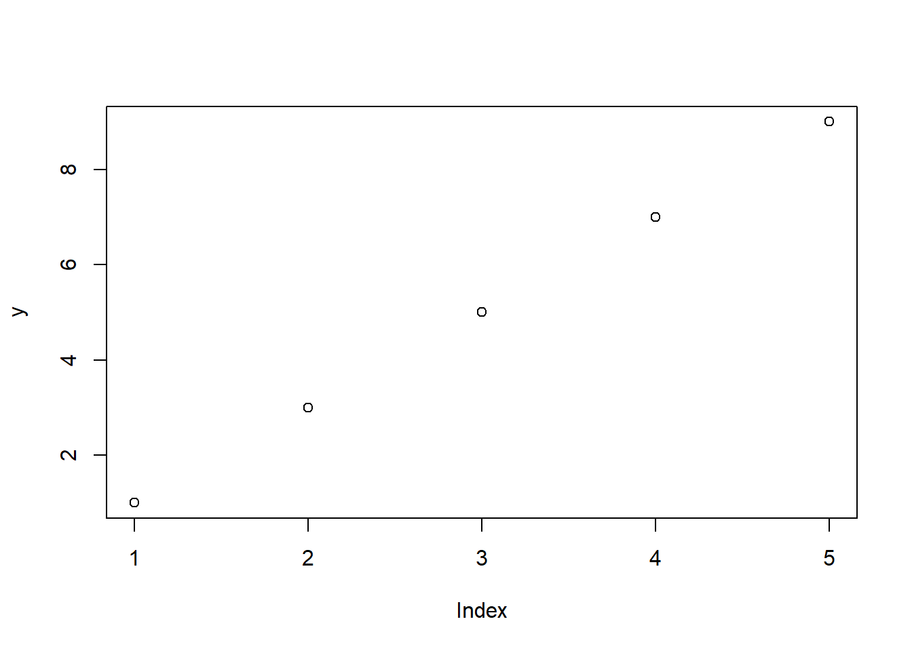
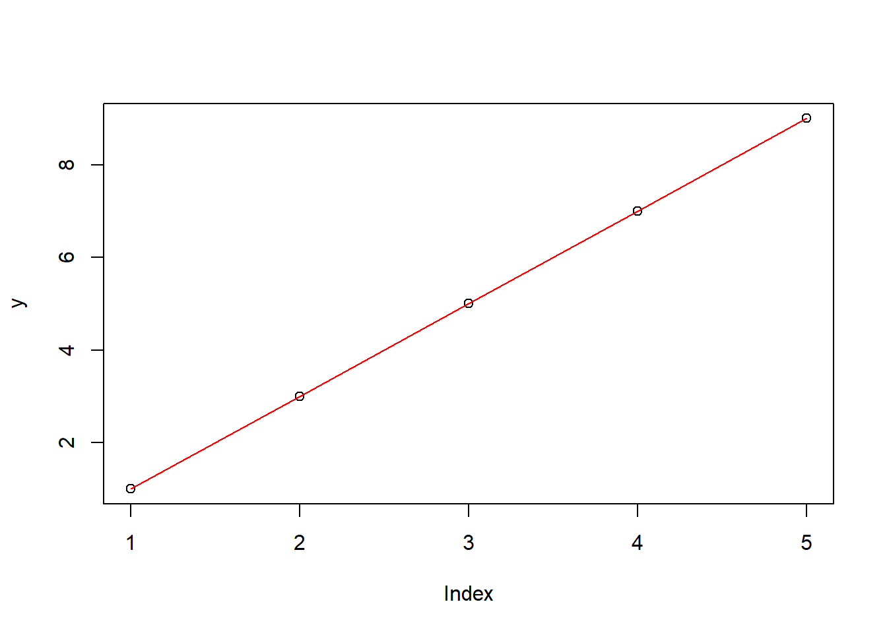
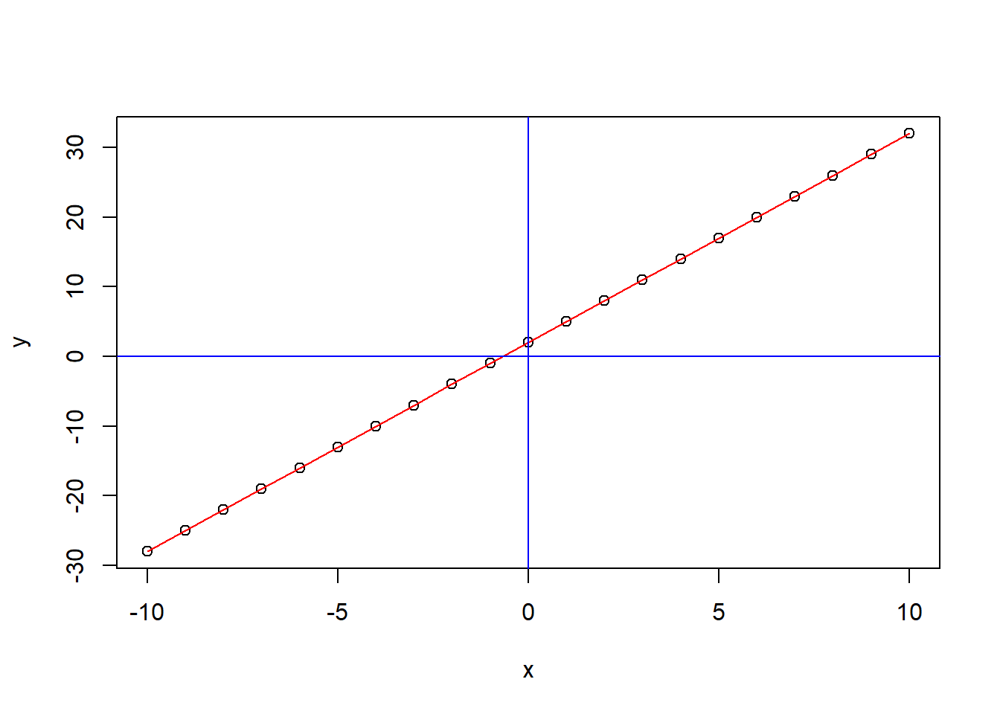
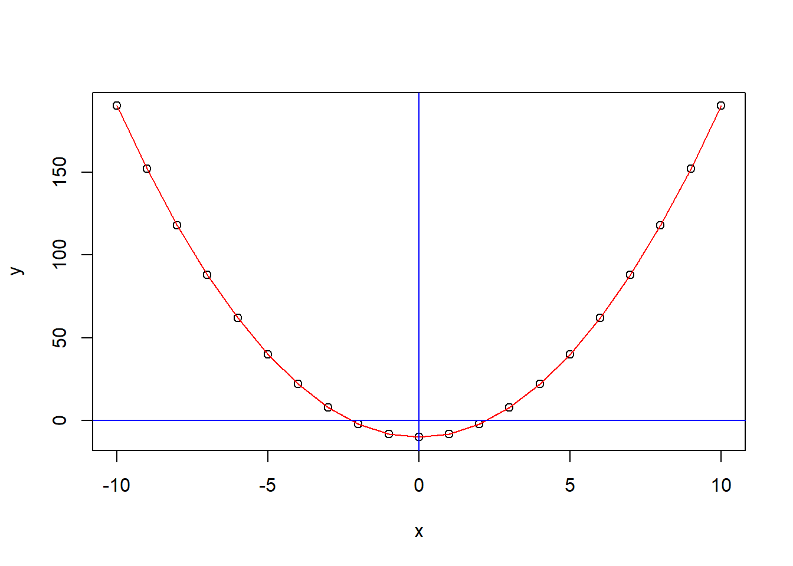

进入初中，孩儿要学一些关于函数的东西，这里用R语言进行一些演示，希望能够帮助孩子理解。
1+1; 4-2; 3*5; 9/2## [1] 2## [1] 2## [1] 15## [1] 4.5abs(5*(-10)); 25%/%3; 25%%3## [1] 50## [1] 8## [1] 12^3 # 2的3次方## [1] 8sqrt(9) # 9开平方## [1] 38^(1/3) # 8开3次方## [1] 2像解应用题要设未知数x一样，在编程的过程中也会指定一些未知数，用来赋值，以及随着计算而变化。不同的是，这里的未知数，可以是一个数，也可以是一串数，也可以是一组数。
x = 3 #这是把x这个对象，赋值为3
x## [1] 3x = x+1 # x增加了1，变成了4
x## [1] 4y = 1:10 # 把y这个对象赋值为1到10，这10个数，一串
y## [1] 1 2 3 4 5 6 7 8 9 10y = y+1 #这一串数每一个都加1，变成了2到11.
y## [1] 2 3 4 5 6 7 8 9 10 11对象也可以用对象来赋值
y = x #则y被赋予之前x的值，即4，成了一个数了
y## [1] 4看下面的代码
y = seq(1, 10, 2) # seq函数产生序列，三个参数分别为从哪里开始，到哪里结束，以多大幅度
plot(y)
可以看到在在图中出现5个点，横坐标为“第几个数”，可见共5个；纵坐标为y的值，即1、3、5、7、9。还可以基于这几个点连上线。
plot(y)
lines(1:5, y,col='red')
这是一个简单的点线作图，实际工作中会遇到各种各样的数据，也会做各种各样的图，不断有新的图被创造出来用以表达信息，在掌握一定基础后，还要保持开放的心态随时学习。
首先学的是一次函数。如y = 3x +2。函数要用function()函数来定义。
yicihanshu = function(x) 3*x + 2 # 这就定义了一个函数，能够代入具体x求值，如代入x=3，结果应该是11.
yicihanshu(3)## [1] 11所以在作图时候利用这个性质，在我们想观察函数值的地方取一串x,代入函数中，就可以得到对应的一串y，再把这些y连起来，就得到了函数曲线。
x = seq(-10, 10, 1) # x取从-10到10的整数，即-10、-9、-8……8、9、10.
y = yicihanshu(x) # 分别求得对应的y值
plot(x,y) # 可以看到这些点
lines(x,y, col="red") # 连上线
abline(h = 0, v = 0, col = "blue") # 添加坐标轴位置，便于观察
#### 二次函数
二次函数和一次函数原理类似，如y = 2*x^2 - 10。
x = seq(-10, 10, 1)
ercihanshu = function(x) 2*x^2 -10
y = ercihanshu(x)
plot(x,y)
lines(x,y, col = "red")
abline(h = 0, v = 0, col = "blue") 
由此，可以更为直观了解函数曲线的由来。通过x的加减变化，y的加减变化，可以理解曲线的左右移动和上下移动。通过调整参数，对二次函数的曲线胖瘦形状变化也能有更直观了解。
本篇就这样吧。